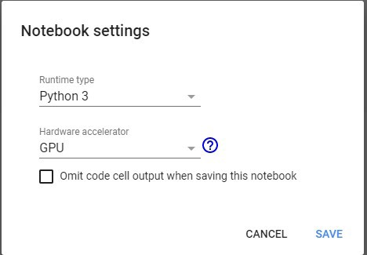

PyTorch 學習筆記
colab 使用GPU 的方法
Edit ->NoteBook Settings 選GPU

如果要將定義好的張量放到GPU上執行，可以用x.cuda()來指定
import torch
import numpy as np
x_tensor = torch.rand(5,3)
y_numpy = np.random.rand(5,3)
x_numpy = x_tensor.numpy()
y_tensor = torch.from_numpy(y_numpy)
print(x_tensor)
print(x_numpy)
print(y_numpy)
print(y_tensor)
if torch.cuda.is_available():
x = x_tensor.cuda()
y = y_tensor.cuda()
print(x+y)
關於自動微分變數，在使用自動微分變數後，針對後續變數的計算，系統會自動展開計算突來運算。也因為這個關係，可以很快地運用.backward 來執行反向傳播演算法。
下面的例子宣告x 是個張量變數(tensor)，無法調用x.grad_fn方法
import torch
import numpy as np
x = torch.ones(3,3)
y = x + 10
print(x)
print(x.grad_fn)
傳回
tensor([[1., 1., 1.], [1., 1., 1.], [1., 1., 1.]])
None
宣告x為自動微分變數， x = Variable(torch.ones(2,2),requires_grad = True)
import torch
import numpy as np
from torch.autograd import Variable
x = Variable(torch.ones(2,2),requires_grad = True)
y = x + 2
print(y.grad_fn)
傳回 <AddBackward0 object at 0x7fc37bd17438>
import torch
import numpy as np
from torch.autograd import Variable
num_x = np.array([[1.0, 2.0],[3.0,4.0]])
tensor_x = torch.from_numpy(num_x)
x = Variable(tensor_x,requires_grad = True)
y = x + 2
z = y*y
print(z)
m = torch.mean(z)
print(m)
傳回
tensor([[ 9., 16.], [25., 36.]], dtype=torch.float64, grad_fn=
import torch
import numpy as np
from torch.autograd import Variable
num_x = np.array([[1.0, 2.0],[3.0,4.0]])
tensor_x = torch.from_numpy(num_x)
x = Variable(tensor_x,requires_grad = True)
y = x + 2
z = y*y #等價 z=torch.mul(y, y)
m = torch.mean(z)
m.backward()
print(x.grad)
傳回
tensor([[1.5000, 2.0000]
, [2.5000, 3.0000]], dtype=torch.float64)
https://minglunwu.com/notes/2020/20200324.html/
研究所時有花時間去了解Neural Network的概念，但卻一直沒有機會進行實作，最近有機會可以從頭開始學習Pytorch，把學習的過程整理記錄下來，希望想要快速上手Pytorch的人，可以透過這篇文章快速入門！
Tensor的基本使用、格式轉換
建立Tensor
a = [1,2,3]
tensor_a = torch.tensor(a)
Tensor 的維度轉換
tensor_reshape = tensor_a.view(1,-1)
Tensor 中的元素型態轉換
僅需要在tensor之後加上轉換的型態即可。
tensor_a_long = tensor_a.long() # 將tensor_a轉換為long資料型態。
tensor_a_float = tensor_a.float() # 將tensor_a轉換為float資料型態。
與其他常用套件之轉換
tensor_b = torch.from_numpy(np_element) # numpy -> torch
np_a = tensor_a.numpy() # torch -> numpy
常會使用到的Module
通常在 Pytorch 時，常會使用到下列的 Module
import torch
import torch.nn as nn
import torch.nn.functional as F
import torch.optim as optim
from torch.utils.data import Dataset, DataLoader
from torch.utils.tensorboard import SummaryWriter
- torch :
Pytorch基本的套件 - torch.nn : 定義了基本的 Layer 元件 (例如: Linear)，在建構模型時會使用到。(請見5. 如何建立一個Network。)
- torch.nn.functional : 定義了卷積、Activation Function 等。
- torch.optim : 定義了許多常見的 optimizer.（請見7.訓練的Pipeline)
- torch.utils.data : 定義了 Dataset 及 DataLoader 等資料相關 Class (請見6. 如何建立訓練資料集)
- torch.utils.tensorboard : 定義了與 Tensorboard 互動相關的 Class (請見8. 視覺化工具-TensorBoard)
建立一個Network
通常透過 Pytorch 建立一個 Network 時，我們習慣透過定義Python 的 Class 來建構我們的 Network. 這一個Python Class 必須具備下列特性:
-
必須繼承
torch.nn.Module，這樣才能使用 Pytorch 內建的各種 function，並且與其他 Pytorch 元件進行互動。 -
繼承
torch.nn.Module後，會需要 Override 一些特定的 Method:- *init*():
定義在 Initial 此 Class(Network) 時需要初始化的元件。基本上在 Network 中需要使用到的 Layer、Hyperparameter 都需要在這邊先行定義。
-
forward()
:
- 透過 Override forward 這個 Method 來定義此 Network 的 Forward Propagation 方式。
- 值得注意的是
forward()在 Override 以後，往後透過可以直接透過 call model 來進行 forward(). (請看下方範例)
class MyOwnNet(nn.Module):
def __init__(self):
super(my_own_net, self).__init__() #初始化 nn.Module class
# 以下按照需求定義Layer.
self.ln = nn.Linear(768, 384)
self.ln_2 = nn.Linear(384, 10)
def forward(self, x):
outputs = self.ln(x)
outputs = self.ln_2(outputs)
if __name__ == "__main__":
net = MyOwnNet()
test = list(range(768))
test_input = torch.tensor(test)
outputs = net(test_input) # 直接呼叫instance，將會自動執行forward()的function.
建立訓練資料集
在定義好模型架構後，接著需要處理資料的部分。
當然在提供訓練資料時，我們也可以單純透過迴圈的方式自行提取，但是透過 Pytorch 的資料集，我們不需要再特別去處理「Batch size」或是「Shuffle」的問題。
這裡記錄了兩種 Pytorch 內建的 Module 提供我們實作並且改寫:
- Dataset
- DataLoader
Dataset
實作時，與上節建立 Network 相同，需要先定義一個 Python Class 來繼承 torch.utils.data.Dataset，並且要Override 以下 Methods:
- *init*(self): 初始化 instance 時需要進行的動作，通常會在這個地方載入資料集、或是進行前處理。
- _getitem(self, index)__: 定義使用 idx 去 query 元素時要進行的動作。 (通常直接回傳第 index 筆資料)
- _len(self)__: 定義使用 len() 去取得 instance 元素數量時要進行的動作。 （通常直接回傳資料筆數)
class OwnDataset(Dataset):
def __init__(self, file_path):
super(OwnDataset, self).__init__()
self.data = pickle.load(open(file_path, "rb")) # 讀取資料
def __len__(self):
return len(self.data)
def __getitem__(self, idx):
return {"x": self.data["feature"], "y": self.data["label"]}
if __name__ == "__main__":
dataset = OwnDataset("./data/test.pickle") #Initial an instance.
print(len(dataset)) # Call __len__()
a_example = dataset[0] # Call __getitem__()
feature, label = a_example["x"], a_example["y"]
從範例中可以看到使用 Dataset 的好處在於先行定義好回傳資料的格式、以及如何取用資料。進行訓練時就不需要再重複的撰寫取用資料的程式。
也可以在Dataset中加入一個 type 變數來切換要回傳 training、evaluation、testing set. 並且針對傳入的型態不同來進行資料的Sample。
DataLoader
除此之外，再進行訓練時常會需要動態的調整 batch_size 以及需要打亂資料(Shuffle)，如果自行撰寫 Function 的話，常會被 index 搞得昏頭轉向。 有時多一個 idx 就會造成 out of range 的錯誤。
此時如果你有按照上述的格式定義好一個 Dataset，那麼以上任務都不用擔心，我們可以透過 DataLoader 直接處理好。
DataLoader 具有幾個參數:
- dataset: 放入我們剛剛創建的 OwnDataset Instance.
- batch_size: 一個 batch 要包含多少資料筆數。
- shuffle: 是否對資料進行隨機調整。
- num_workers: 透過 Multi-Process 來加速資料的取用，避免訓練時速度被 IO 給限制。（不建議使用在GPU環境)
- pin_memory: 在使用 GPU 時，啟用此屬性能提升訓練速度。
有關 num_workers, pin_memory 的探討，建議可以參考官方文件
data_loader = DataLoader(dataset= dataset, batch_size= 4, shuffle= True, num_workers= 2, pin_memory= True)
print(len(data_loader)) #回傳當前共有幾個batch，可以直接用這個數值來作為Step.
data_iter = iter(data_loader)
x, y = data_iter.next() # 透過這種方式來取用資料。
for (x,y) in data_iter: # 也可以透過For loop來取用資料。
some_train_step(x)
在定義完 Dataset 後，透過 DataLoader 來對資料進行訓練前的處理，接著就能按照需求去取得資料。相當的方便且簡潔。
訓練的Pipeline
個人認為建構 Model 的 Pipeline 大略如下:
- 定義 Model.
- 定義 Dataset.
- 定義 Loss 以及 Optimizer.
- 進行訓練.
其中第一點以及第二點請參考本文前段。
定義Loss及Optimizer
在 torch.nn 以及 torch.nn.Functional 中定義了許多不同的 Loss Function，可以根據需求自行選擇. 以下範例以分類問題的 CrossEntropy 為例:
import torch.nn as nn
import torch.nn.functional as F
import torch.optim as optim
# Init an instance.
criterion = nn.CrossEntropyLoss()
# 建立一個optimizer來優化 model 的所有"可訓練參數"
optimizer = optim.Adam(model.parameters(), lr=1e-5)
首先，必須先建立計算 Loss 以及 Optimizer 的 Instance。
在建立 Optimizer 時會需要設定優化的對象，通常會直接放 model.parameters()，代表 model 中所有可訓練的參數。而不同的 Optimizer(SGD, Adam, …) 會有不同的參數要進行設定。
進行訓練
feature, label = data_iter.next() #透過前面提到的iterator取得一個batch的資料。
outputs = model(x) # 將訓練資料送入model中進行forward propagation。
loss = criterion(outputs, y) # 回傳當前Forward結果與真實Label的Loss
optimizer.zero_grad() # 先清空當前的梯度值
loss.backward() # 進行Backward Propagation
optimizer.step() # 針對Backward Propagation所得到的梯度調整參數。
接著直接呼叫 model(x) 如同上節所說，就是直接將 x 送入 model 中進行 Forward Propagation。 得到的結果可以直接與真實 label 送到剛剛建立的 Loss Instance 計算 Loss.
在計算完Loss後，我們就能直接使用 loss.backward() 來取得 Loss 對所有參數的梯度。 在 Pytorch 中，我們只有定義 Forward 的方式，而 Backward Propagation 只需要透過短短一行即可得到。
取得每一個參數的梯度以後，就能呼叫剛剛定義的 optimizer.step() 來進行參數調整。
以上就是一次的訓練迭代: Forward propagation -> 計算Loss -> Backward propagation -> Optimize (根據梯度調整Weight.)
實際訓練時可根據需求來不斷從 Data Iterator 中取得資料，重複上述迭代進行訓練，也因為會有不斷的迭代，所以記得使用 optimizer.zero_grad() 來清空上一次的梯度。
另外，在 Pytorch 中的 Tensor 都會有 requires_grad 的屬性，如果啟用的話會自動追蹤計算圖，方便直接呼叫backward()，如果不希望啟用的話，可以透過下列方法解除:
# Method 1
tensor_nograd = torch.tensor([1,2,3], requires_grad=False)
# Method 2
with torch.no_grad(): # 以下做的事情都不會取得梯度。
# Your Code.
視覺化工具-TensorBoard
基本使用
在訓練的過程中，我們需要觀察 Loss 或是 Accuracy 來確認訓練的效果，雖然可以透過 Print Log 的方式來顯示，但其實透過有更好的工具能夠協助視覺化。
from torch.utils.tensorboard import SummaryWriter
LOGDIR = "./logs/" # Define 資料要被寫入的位置
writer = SummaryWriter(LOGDIR)
for n_iter in range(100):
writer.add_scalar('Loss/train', np.random.random(), n_iter)
writer.add_scalar('Loss/test', np.random.random(), n_iter)
writer.add_scalar('Accuracy/train', np.random.random(), n_iter)
writer.add_scalar('Accuracy/test', np.random.random(), n_iter)
也就是在定義了一個 writer 後，可以透過 writer.add_scalar 的方式將想要觀測的值記錄下來，同時可以分門別類的設定標籤、Step 或是 Epoch 數目。 除了add_scalar 外，還有許多如 add_image、add_graph 的方法可以使用。
寫入資料後，執行 tensorboard 即可在 LocalHost 的瀏覽器觀察結果:
pip install tensorboard
tensorboard --logdir="./logs"

Remote Server
另外在進行機器學習時，常常會需要使用到遠端主機的 GPU，紀錄一下如何在 Localhost 查看遠端機器的訓練狀態。 首先還是一樣要在訓練過程中透過 SummaryWriter 將 log 寫入。
接著透過 SSH連線將本地端的一個 Port 與遠端機器的特定 Port 綁定在一起，首先在本地端執行:
ssh -L 16001:127.0.0.1:16001 username@server_ip
透過特定 Port 與遠端主機連線。
接著在遠端主機執行
tensorboard --logdir="./logs" --port=16001
同樣的啟動指令，只是規定要在剛剛設定 Port 上啟動服務。
如此一來就能在自己的主機上查看遠端 Server 的訓練狀況了。
儲存、載入Model
在訓練完模型後，需要將模型儲存下來，方便日後驗證或使用。 Pytorch 提供了兩種儲存方法: 完整模型 以及 State_dict
完整模型:
官方較不推薦這種方式，由於是透過 pickle 的方式進行儲存，很可能會遭遇意料之外的問題。
Save
torch.save(model, PATH)
Load
model = torch.load(PATH)
model.eval()
在 Pytorch 的 model 中，可以透過 model.train() 以及 model.eval() 來切換不同模式，使用 model.eval() 會將 dropout layer 以及 batch_normalization 切換成驗證模式，避免在 Inference 的過程中造成結果不一致。
State Dict
State Dictionary 則是透過 Python 的 Dictionary 來儲存每一層的內容以及權重。如果要查看的話可以透過model.state_dict() 來取得。
Save
torch.save(model.state_dict(), PATH)
Load
model = MyOwnNet() # 要先建立相同的Class Instance.
model.load_state_dict(torch.load(PATH))
model.eval()
使用GPU
在上述的內容完成後，基本上已經可以建立一個簡易的 Neural Network 了，接下來紀錄如何將快速的將資料從 CPU 訓練切換為 GPU.
首先要先確定自己的 Pytorch 是有安裝到 CUDA 版本。 可以透過下列指令確認:
print(torch.cuda.is_available())
如果是 True 則代表有成功偵測到 GPU，若為 False 則可能是設定錯誤！
接著要建立一個 device 變數:
device = torch.device("cuda" if torch.cuda.is_available() else "cpu")
接著就是將自己的 Model 以及需要送進 Model 的 Input 都轉換為 GPU 模式.
model = model.to(device)
x, y = x.to(device), y.to(device)
# 以下正常進行使用
只要加上短短一行指令即可切換為 GPU 模式，此時如果在 print 這些 tensor，可以發現數值不變，但是後面多了一個"cuda:n" 屬性，這就代表 Tensor 已經被送到 GPU 去了。
後記
在學習 Pytorch 的過程中，很多教材都是語法居多，透過實際進行任務的方式教學，但我在過程中對於許多 Component都似懂非懂，現在稍微釐清後，記錄下來，希望如果是想學習 Pytorch 的入門者，看完這篇文章可以瞭解一些基本觀念，在看網路上的 Tutorial 或是 Track 別人的 Code 時，能夠不再霧煞煞～